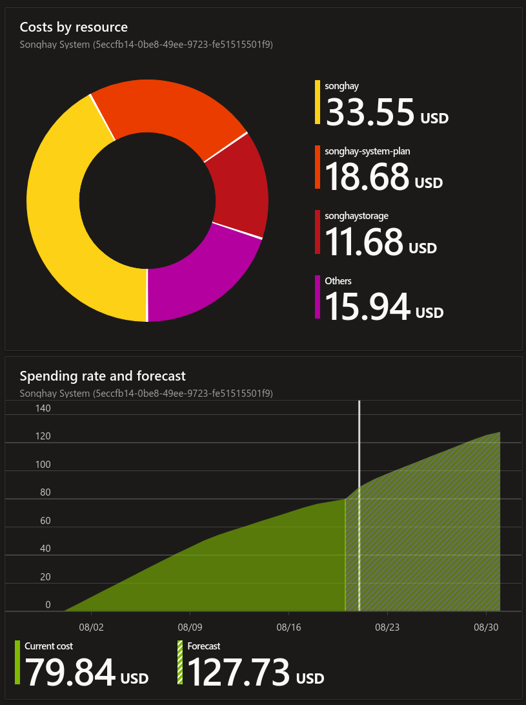
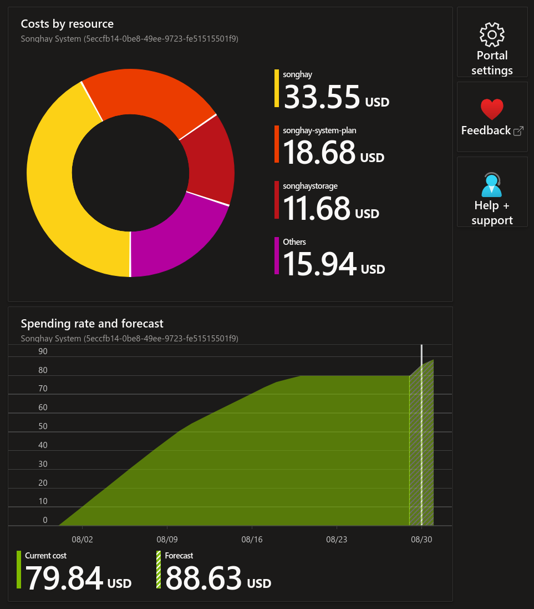
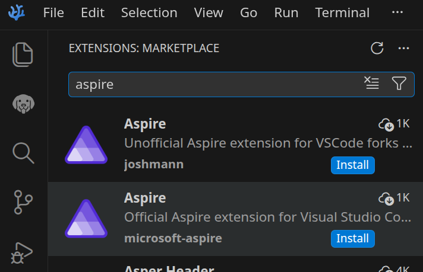

studio status report: 2026-08
Month 08 of 2026 was about really understanding what Aspire is because my disagreement with Azure billing has led me off the path beaten to death by the co-author of Zero Day: A Novel. As modern developers, we are not supposed to be going around with the expectation of installing our apps in the cloud without containerization. My Azure billing issues have encouraged me to be that old guy 👴 trying hang out with the cool kids 😎 I am adding Aspire-first, back-end development skills to my mix 👏

Why Everyone Will be Using .NET Aspire /w David Fowler
My disagreement with Azure billing appears to be over based what I am seeing in the Azure Portal from, like, last week:

…to today:

Here is my short list of anti-Azure-billing allegations that would be a waste of your time to reduce to the absurd:
- the sincerely concerned Microsoft support staff are not trained (or coached by AI) to have any insight whatsoever into the specific issue(s) of the customer (the customer wastes time explaining shit to them instead of them telling me anything relevant or useful—with the help of AI)
- the culture of EDA around Azure billing is completely absent because I never interacted with Microsoft support staff in the context of my actions as a customer (e.g. staff should be eager to tell me when I opted into something that would increase costs—AI can easily aggregate my events and show me what I did instead of everyone guessing politely)
- the lack of efficiency due to the lack of EDA culture allows Microsoft to literally profit from not using AI where it is actually needed
- Azure charges so much for storage it feels like they do this to drive people off the platform so they can use the resources (for their boil-the-ocean AI initiatives)
- Azure charges so much for storage that you cannot use almost all other Azure-based products which depend on Azure Storage
- when you find yourself reading these words on https://songhayblog.azurewebsites.net/ this means I am still using a “free” Azure App Service that does not have CDN support and does not have free HTTPS (TLS) support for a custom domain by default like Netlify for example (as of this writing, Microsoft effectively charges at least $50/month for HTTPS and I did not bother to look into geo-locating)—in other words, I will probably be moving this Blog in a few months 🙁😓
It took me months to figure how to stop the bleeding with Azure billing: long story short, I had to disable billing for Azure DevOps completely after one sincerely concerned and effective Microsoft support person pointed out that I was being billed for something that I do not recall opting into. I should have been able to see the name of the product I was being billed for and ‘turn off’ that product instead of cutting off everything. This experience pushed me over the edge and (with the help of AI—mostly the Google search AI) I think I get the message:
- the rest of the world’s cloud storage is (mostly) standardized around the AWS S3 API so I need to get with that because these S3 alternatives are far less expensive than these ‘new’ Microsoft offerings
- start with containerization first on the back-end—and here is where Aspire has been the whole time—because containerization allows everyone to shop around for the lowest price (previously, I thought that only big org’s on the Kubernetes level did this)
With the above in view, we can see why there has been a new S3-related package release 📦🚀✨ from SonghayCore among the releases of the month (in chronological order):
- Songhay.Modules 10.1.0📦🚀
- Songhay.Modules.Publications 10.1.0📦🚀
- Songhay.Modules.Bolero 10.1.0📦🚀
- Songhay.Player.ProgressiveAudio 10.0.0📦🚀
- SonghayCore 10.0.2 📦🚀
- SonghayCore.S3 10.0.1 📦🚀✨
This is too much work—especially during a heatwave—but when Microsoft starts getting drunk and starts hauling off and slapping dudes we gotta move… 🌬️👟
Selected notes of the month:
Feedsmith is a simple way to visualize RSS data, including OPML
Fast, all‑in‑one JavaScript feed parser and generator for RSS, Atom, RDF, and JSON Feed, with support for popular namespaces and OPML files.
Feedsmith offers universal and format‑specific parsers that maintain the original feed structure in a clean, object-oriented format while intelligently normalizing legacy elements. Access all feed data without compromising simplicity.
See “Parsing Examples” 📖
Songhay System Studio: “My TOP Patterns for Event Driven Architecture”

My TOP Patterns for Event Driven Architecture
- the outbox pattern (when a publisher cannot publish)
- the inbox pattern (when a subscriber/consumer cannot subscribe)
- at-least-once delivery (to prevent duplicate messages… depends on the inbox pattern❔)
- event choreography/orchestration
- handling transient failures (e.g. using an “exponential back-off” and then terminating with a dead-letter queue or topic)
.NET C♯: Facet is better than AutoMapper …
…but it is slower in part because of its code-generation features as shown in this Nick Chapsas video:

Stop Mapping in .NET Use Facets Instead
Facet is a C# source generator that eliminates DTO boilerplate. Declare what you want, and Facet generates the type, constructor, LINQ projection, and reverse mapping, all at compile time with zero runtime overhead.
a very tough SCSS question for Google AI
…how do we set a CSS custom property with a scss variable value?
To set a CSS custom property (CSS variable) using a Sass (SCSS) variable, you must use Sass interpolation with the
#{}syntax. 1, 2, 3
// Define the SCSS variable
$brand-color: #ff5733;
:root {
// Set the CSS custom property using interpolation
--main-color: #{$brand-color};
}
.button {
// Use the CSS custom property in your styles
color: var(--main-color);
}
Why Interpolation is Required
Sass treats CSS custom properties literally to ensure maximum compatibility with native CSS features. If you write
--main-color: $brand-color;without the#{}wrapper, Sass will compile it literally as--main-color: $brand-color;, which browsers cannot understand. Interpolation forces Sass to evaluate the variable and inject its actual value before compiling to CSS. 1, 2, 3, 4
Astro: according to Google AI, DOMPurify is needed 😐📦📦📦📦
…can astro display santized chunks of HTML?
Yes, Astro can display chunks of HTML using the
set:htmldirective, but it does not sanitize the content automatically. You must sanitize the HTML string yourself using a library like DOMPurify before passing it to Astro to prevent security risks like XSS. 1, 2, 3How to Display HTML in Astro
Use the
set:htmldirective on any HTML element to inject a raw string.Pass your variable directly:
<div set:html={sanitizedHTML} />.Avoid curly braces alone like
<div>{rawHTML}</div>, which will print out or escape the string text instead of rendering it as markup. 1, 2, 3, 4, 5Recommended Sanitization Process
Install a sanitization library like
isomorphic-dompurifyordompurify.Sanitize your string on the server or during build time before assignment.
Render the clean output safely inside your component template. 1
asking Google AI about my CSS background-image problems 😐💄
…what does the syntax look like for background-image being set by CSS variable?
The correct syntax for setting a
background-imageusing a CSS variable requires ==storing the entireurl()function (or gradient function) inside the variable itself==. 1Standard Syntax
:root {
/* Store the entire function inside the variable */
--my-bg-image: url('https://example.com');
}
.hero-element {
/* Call the variable directly */
background-image: var(--my-bg-image);
}
❌ The Common Mistake (What Doesn't Work)
You cannot place a CSS variable inside the standard
url()function like this: 1
/* THIS WILL NOT WORK */
:root {
--image-path: 'https://example.com';
}
.hero-element {
background-image: url(var(--image-path)); /* Browser treats "var(--image-path)" as a literal relative path string */
}
Songhay Modules (F♯): I know that FsUnit.xUnit is causing xUnit.net problems 😐😠📦🔥
I generate a brand new test project and define a type for a test that is having ITestOutputHelper injected and it works fine. Then I install FsUnit.xUnit (https://github.com/fsprojects/FsUnit) and the error message is this:
Xunit.Sdk.TestPipelineException
The following constructor parameters did not have matching fixture data: ITestOutputHelper testOutputHelper
Exception doesn't have a stacktrace
I am so pissed that I am willing live my F♯ life without FsUnit.xUnit! It means I will be losing this:
actual |> should be (ofCase <@ Result<Uri,exn>.Error @>)
…which, comically, can be replaced with:
actual.IsError |> Assert.True
There has not been a release for over a year.
.NET F♯: I have stumbled upon the “record of functions” pattern with an answer from Google AI 😐🤔
…in f# can a type composed of functions serve as an interface?
==Yes, a F# type made of functions can act like an interface==. You can use a record or a class where each field is a function. This pattern is often called record of functions. It lets you group related behaviors together. 1, 2, 3, 4
How It Works
- Define a record type with function fields.
- Create a value by filling the fields with real functions.
- Pass the record around like an object or interface.
- Call the fields to run the code. 1, 2
Why Use This Pattern
type Greeter = {
SayHello: string -> string
SayGoodbye: string -> string
}
let englishGreeter = {
SayHello = fun name -> "Hello, " + name
SayGoodbye = fun name -> "Goodbye, " + name
}
let greetUser greeter name =
greeter.SayHello(name)
[!question] An OOP interface can enforce a contract by inheritance and “injection” while it looks like a “record of functions” can only enforce a contract by “injection,” including a strongly typed
letbinding. Right? #to-do
related reading
- “F# Record of Functions: A Superior Alternative to Abstract Member Interfaces”
- “Interfaces”
- “Explicit Interface Implementation (C# Programming Guide)”
Blazor: this Studio needs to use “virtualization” #to-do 😐✨
.NET 11 adds support for non-fixed (❔) or “variable height” collections:

Blazor Community Standup: Blazor virtualization gets flexible
VSCodium: wow, David Fowler surely had his hand in this…

open pull requests on GitHub 🐙🐈
- https://github.com/BryanWilhite/Songhay.HelloWorlds.Activities/pull/14
https://github.com/BryanWilhite/dotnet-core/pull/67
sketching out development projects

- use a Jupyter Notebook to track finding and changing Amazon links to open source links in the kinté space repo 📓⚙
- use a Jupyter Notebook to convert flickr links to Publications (responsive image) links in the kinté space repo 📓⚙
- convert Songhay Day Path Blog repo to the relevant conventions shown in the diagram above 🔨🚜
- re-release SonghaySystem.com in Astro on Netlify 🚀
- start development of Songhay Publications Index (F♯) experience for WebAssembly 🍱✨
- start development of Songhay Publications - Data Editor to establish a GUI for
*Shelland provide visualizations and interactions for Publications data 🍱✨